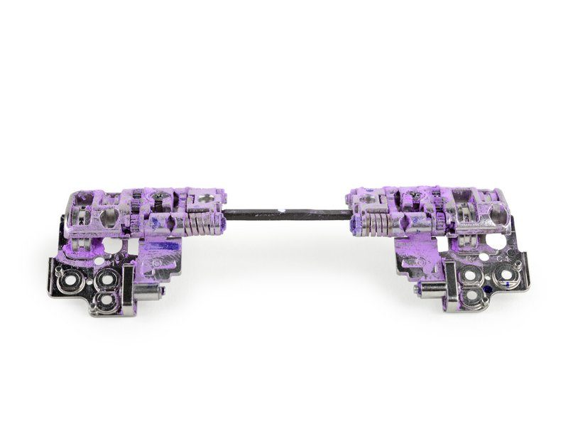
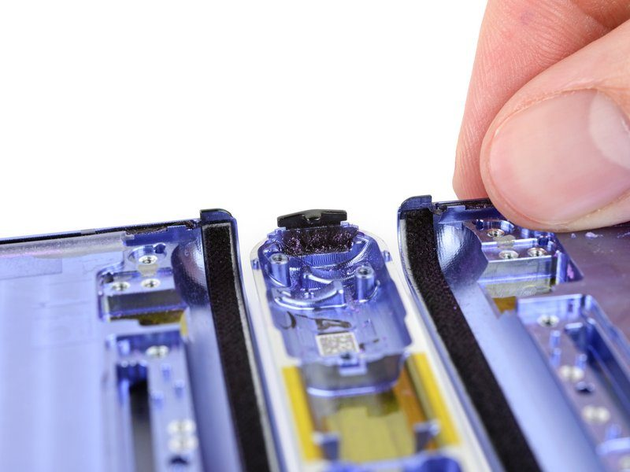
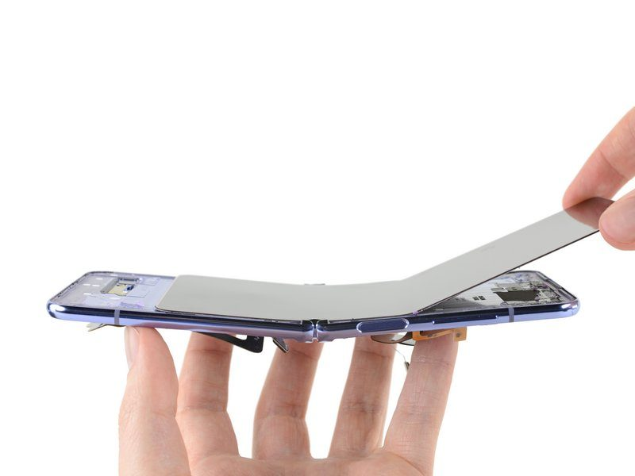

配图

iFixit：粉尘测试后的铰链总成

iFixit：铰链侧的尼龙刷

iFixit：屏幕背面的金属支撑与中间开槽「锁子甲」
图片版权归原作者所有，仅作个人学习收藏；出处见文末「来源与核实记录」。
结构原理
本节数字只写来源里给出的；来源没有就写「来源未给出」。
堆叠方案
方向：从内屏正面向内
| 层级 | 零件 | 材料 | 厚度/尺寸 | 固定方式 | 依据 |
|---|---|---|---|---|---|
| L1 | 塑料表层 | 塑料 | 来源未给出 | 屏幕叠层的一部分 | Step 12 |
| L2 | 超薄玻璃 (UTG) | 玻璃 | 来源未给出 | 屏幕叠层中间层 | Step 12 |
| L3 | OLED 面板 | 来源未给出 | 来源未给出 | 主要在上下边缘粘接，中部胶少 | Step 11 |
| L4 | 金属支撑板（两侧）+ 中间开槽金属层 | 金属 | 来源未给出 | 贴在屏幕背面 | Step 11 |
| L5 | 铰链保护胶带 | 胶带 | 来源未给出 | 粘贴 | Step 13 |
| L6 | 异形排线 + 尼龙刷 + 铰链 | 尼龙/金属 | 来源未给出 | 排线成形绕过铰链 | Step 13-14 |
剖面示意：
flowchart TB N0["塑料表层"] N1["超薄玻璃"] N2["OLED"] N3["金属支撑+开槽层"] N4["铰链胶带"] N5["排线/尼龙刷/铰链"] N0 --> N1 --> N2 --> N3 --> N4 --> N5
零件清单
| 零件 | 数量 | 功能 | 材料 | 依据 |
|---|---|---|---|---|
| 铰链总成（Hideaway Hinge） | 1 | 开合（初代悬停能力来源未说明；Fold3 文章称 Flip3 改为可停在任意角度） | 来源未给出 | Step 14 |
| 尼龙刷 | 来源未给出 | 扫除灰尘 | 尼龙纤维（三星称微高度切割工艺） | Step 5 |
| 磁铁 | 每角成组 | 合盖吸附 | 磁铁 | Step 2（X 光） |
| 异形排线 | 来源未给出 | 绕过铰链连接两半 | 来源未给出 | Step 13 |
| 电池 | 2 | 供电（2370 mAh/9.15 Wh 与 930 mAh/3.59 Wh） | 锂电 | Step 10 |
装配顺序
- (按拆解顺序反推) 铰链与尼龙刷装入框架，排线成形后绕过铰链布置
- 贴铰链保护胶带
- 装两块电池（强力胶粘）与主板（双层堆叠板）
- 屏幕主要沿上下边缘粘接，再粘塑料边框
- 最后粘上两块后盖
来源只给出拆解顺序，以上为按拆解顺序反推。
受力与运动分析
- 受力路径：开合时铰链齿轮传动；X 光可见弹簧加载的铰链总成和四角磁铁用于合盖吸附（Step 2）。
- 运动关系：上下翻折。铰链胶带把粉尘挡在屏幕之外，却也把粉尘「关」在铰链里（Step 13）。
- 失效风险：粉尘测试几秒后开合出现爆裂声、铰链卡死，倒出约一茶匙粉末；刷毛上留下的粉尘很少（Step 5、15）。iFixit 也注明该测试并不完全代表真实使用。
设计要点与参数
| 要点 | 内容 | 依据 |
|---|---|---|
| 厂商标称厚度 | 6.9–7.2 mm（不含塑料边框） | Step 4 |
| 电池总能量 | 12.74 Wh | Step 10 |
| 刷毛规格/铰链扭矩 | 来源未给出 | — |
优缺点
优点
- 铰链结构紧凑，外观完整
- 屏幕背面用开槽金属层兼顾刚度与可弯折
缺点 / 代价
- 刷毛防尘在极端粉尘测试中失效
- 可维修性 2/10：玻璃粘接、电池强胶
可借鉴点
- 防尘设计要做验证测试，而不是只依赖结构概念
- 胶带挡尘要考虑「挡在哪一侧」——可能把污物留在运动副里
- 刚度板中段开槽是常见的可弯折加强做法
相关案例
来源与核实记录
- 主来源：Samsung Galaxy Z Flip Teardown（2020-02-18，Taylor Dixon / iFixit）
- 核实：2026-11-13 通过 iFixit API 读取 16 步原文，核对刷毛描述、粉尘测试结果、屏幕层次与电池数据。